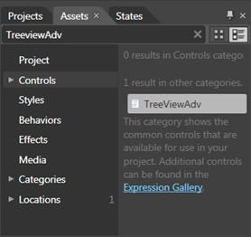
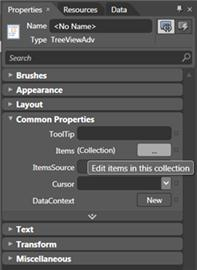
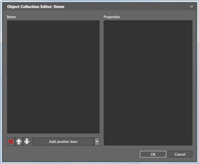
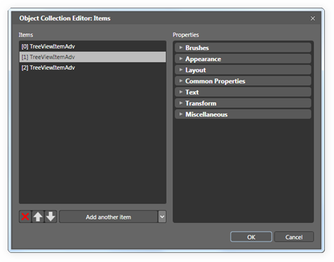

TreeViewAdv Control provides full Blend support. Here are the step-by-step instructions to create Silverlight application in Blend.
To create TreeViewAdv using Expression Blend:
1. Open Blend.
2. On the File Menu, click New Project. This opens the New Project dialog box.

Figure 736: New Project Dialog box
3. In the Project type’s panel, select Silverlight application and then click OK.

Figure 737: New Project
4. Add the following Reference with the sample project:
· Syncfusion.Shared.WPF.dll
5. On the Window menu, select Assets. This opens the Assets Library dialog box.
6. In the Search box, type TreeViewAdv. This displays the search results.

Figure 738: Assets Library dialog box
7. Drag the TreeViewAdv control to Design View.
8. Now select TreeViewAdv control to add items. After you select the control, navigate to Common Properties located in the Properties pane and click the button next to Items (Collection).The Object Collection Editor will appear.

Figure 739: Properties Window
9. Object Collection Editor has two sections. The left Object Collection Editor e contains the list having items of the selected TreeViewAdv.

Figure 740: Object Collection Editor
10. To add another item to the selected TreeViewAdv, click Add another Item button located at the bottom of the items list. To remove items, click the RemoveItem button. If you want to add child items to a specific TreeViewItemAdv, you need to select the item from the items list in the Object Collection Editor dialog. After you have selected the item, navigate to Common Properties located in the Properties pane and click the button next to Items. Again, the Object Collection Editor dialog will appear.

Figure 741: Object Collection Editor dialog
11. Click OK to confirm the changes and close the dialog.
See Also